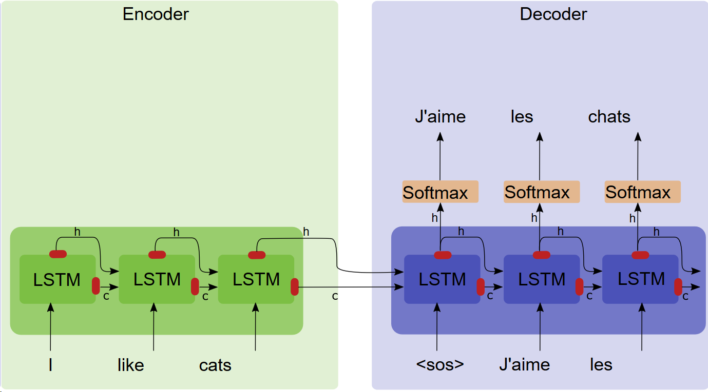
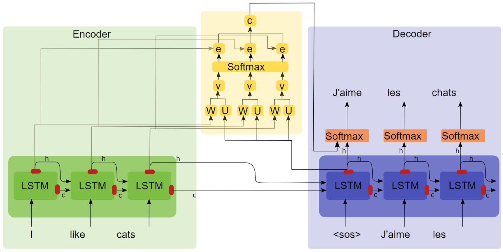
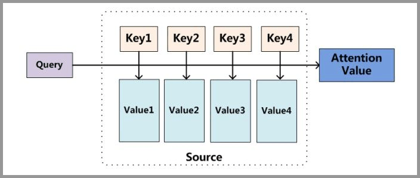
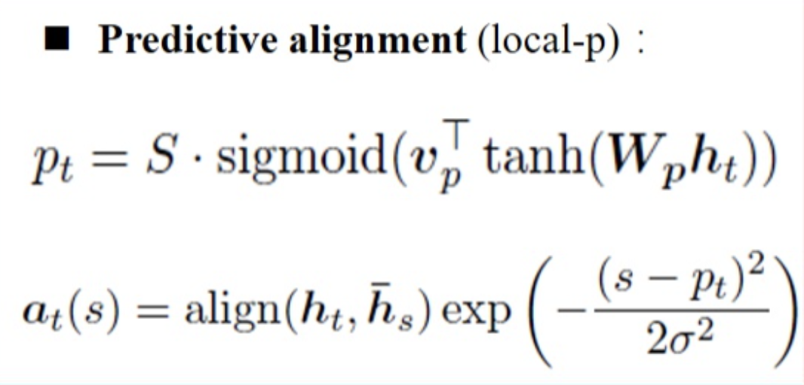

注意力机制(Attention), 可以说是现在深度学习中不可或缺的一个组成部分, 在多个场景下, 将模型的性能明显提高.
本篇主要介绍Attention的原理, 并展示其在文本分类上的应用.
Attention介绍
Attention的由来
在以前上学的时候, 有时候老师会强调听课要注意力集中, 此外在学习的时候注意力是否能够集中, 也是衡量一个学生学习能力的指标之一. 为什么要集中注意力呢, 其中一个原因是我们通过五官, 每时每刻能够接收到外界的大量信息, 但是首先并不是所有信息都是重要的, 其次我们的CPU(大脑)并不能有效处理所有信息, 所以需要分清主次, 针对性处理重要的信息.
那么, 这样的思想可以引入机器学习/深度学习吗, 是可以的.
深度学习中的注意力机制借鉴了人类的注意力思维方式. 比如视觉注意力机制是人类视觉所特有的大脑信号处理机制. 人类视觉通过快速扫描全局图像, 获得需要重点关注的目标区域, 也就是所说的注意力焦点, 然后对这一区域投入更多的注意力资源, 以获取更多所需要关注目标的细节信息, 从而抑制其它无用信息. 这是人类利用有限的注意力资源从大量信息中快速筛选出高价值信息的手段, 是人类在长期进化中形成的一种生存机制. 人类视觉注意力机制极大地提高了视觉信息处理的效率与准确性.
比如在上图中, 如果一眼看过去, 一般来说会优先注意到<锦江大饭店>的招牌, 而其它的一些信息(如招牌上的电话), 可能就不会太注意. 所以当我们实际看到的图片可能是这样的:
深度学习中的Attention
在深度学习中的, 其实Attention首先出现在计算机视觉当中, 而随后在NLP中开始应用, 并且由于BERT和GPT这些出色模型的出现, 其核心Attention开始被大众所关注, 发扬光大. BERT, Transformer, Attention的关系大致如下图:

这里不讲在计算机视觉中的Attention, 主要以NLP中的Attention使用, 来说明Attention的原理.
在深度学习中, 有一种Encoder-Decoder框架, 框架分为两部分, 其中的Encoder部分, 负责将源数据进行编码, 而Decoder则负责将编码的信息进行解码. 比如在”看图说话”中, 可以使用CNN-RNN的具体结构; 在机器翻译中, 可以使用RNN-RNN的具体结构, 而这样的序列到序列的模型, 也称为Seq2Seq.
为什么要提Encoder-Decoder呢, 不是在讲Attention吗? 因为Attention将这一类框架提升到了一个新的高度. 需要注意的是, Attention是一种方法, 本身并不依赖于任何一种框架或者模型. 下面来看一看经典的Seq2Seq框架:

上图是一个使用LSTM-LSTM的翻译模型, 从英语翻译到法语. 从Encoder传输向Decoder的, 就是LSTM中的$c$和$h$两个向量, 下面统一称之为上下文向量(context vector). 然后Decoder在接收到上下文向量后, 开始逐步解码, 即翻译.
其实中以上的模型结构中, 很容易发现其问题, 一个小小的上下文向量, 如何表示前面语句的语法和语义信息, 让Decoder接受到以后能够正确地翻译出来? 这需要一个Encoder和Decoder的精妙配合, 谁出了点问题都不行.
其实在Encoder的LSTM中, 其输出的信息可不止最后的上下文向量, 而是同样输出了序列信息, 如果能够把整个序列的输出向量都利用起来, 是不是就会比只用最后一个向量, 得到更好的结果呢?
这时候就可以让Attention上场了:

上图中, 在加入了Attention了以后, Decoder在$t$时刻解码时, 会将$h_{t}^{Decoder}$, 作为Query向量, 与Encoder中的各个时刻$t\in T$输出的向量$h_{t}^{Encoder}$进行运算(如内积), 得到一系列的Score(标量), 然后利用Softmax得到一个分布. 这个分布的含义, 就是表示Encoder中各个时刻的输出向量, 对Decoder当前的贡献或者相关性. 然后利用这个分布, 对Encoder的输出向量$h_{t}^{Encoder}$进行加权平均, 得到的向量再与原本的$h_{t}^{Decoder}$进行拼接, 来进行当前的预测(翻译).
在加入了Attention以后, Decoder中每个时刻都用到了Encoder的所有输出向量, 同时每次通过加权平均, 关注相关性高的输出向量, 使得无论是Eecoder还是Decoder都可以学得更加轻松.
认识了Attention在Encoder-Decoder中的形式后, 下面来介绍Attention的通用的抽象结构.

Attention的计算需要三类元素:
- Query
- Key
- Value
由Query与Key计算得到权值, 然后用权值与Value一起得到最终的Attention Value(加权向量).
更加具体的过程如下图:

阶段一
由Query和各个Key经过某种计算方式, 得到一系列的Score.
阶段二
对得到的Score进行Softmax, 转化为概率分布.
阶段三
利用得到的概率分布, 对Value进行加权平均, 输出最终的Attention Value.
不同类型的Attention
上面通过Encoder-Decoder框架, 介绍了Attention的一种使用方式, 但是构建Attention的方式绝不唯一, 使用场景也可以多种多样, 因此下面对Attention的一些类型来进行不完全总结.
Global Attention & Local Attention
按计算区域来进行划分, 可以分为Global Attention与Local Attention. 其中全局很好理解, 就是比如在上面的Encoder-Decoder中, 计算Attention时利用到了Encoder所有的输出向量.
Global Attention也属于Soft Attention(加权平均), 其缺点是当序列较长时, 每次都要计算整个序列的Attention, 复杂度较高, 且由于其中可能包含大量不相关信息, 导致效果反而下降.
与之对应的是Hard Attention, 即每次通过一些方法选择一个最相关的向量, 具体实现不了解, 但是据说不可微, 需要用到强化学习.
Local Attention算是Global Attention和Hard Attention的折中, 每次选择一部分向量进行计算, 这样可以减少计算量, 效果也不错, 同时可微. 主要思路为
Local Attention具体可以有两种做法:
Monotonic alignment
这种做法比较简单粗暴, 比如当前进行到了Decoder的第$t$步, 那么对应的取Encoder的第$t$步的窗口中心, 然后将其两侧的窗口内的向量用来进行计算.
Predictive alignment

先使用一个小网络来进行计算输出一个概率, 再让这个概率乘以Encoder的长度$S$得到窗口中心的位置. 然后在计算得到了Score后, 再乘以一个高斯分布来调整权值, 即靠近窗口中心的权值更大, 反之更小.
General Attention & Self Attention
所谓General Attention, 就是计算Attention Value用到的Query, Key, Value可以来自不同的数据源.
对应的Self Attention, 则是说Query, Key, Value来自于同一数据源. 而前面提到的BERT, 正是用到的Self Attention, 这里不做更多的讲解.
Multi-head Attention
就是说, 将原本的一个Query变成多个Query, 每个Query关注不同的重点.
Pure Attention
Attention的实现可以依附于CNN, RNN这样的模型, 也可以单独用来构建模型, Transformer就是纯粹使用Attention来搭建的.
而对于Query和Key进行计算得到Score的方式, 也是不固定的, 常用的一些方式如下:
内积:
余弦相似度:
线性:
拼接+线性:
非线性:
拼接+非线性:
文本分类实例
LSTM
在使用LSTM进行文本分类的时候, 一般来说双向的, 即BiLSTM效果会更好一些, 不过这里的重点是看加入了Attention之后, 对于分类效果是否有提升, 所以只用了最简单的单向LSTM. 这里在加载数据前, 已经做好了词表和对原始数据的编码.
为了保证尽可能的公平, 让加入Attention前后的模型参数差不多, 所以在不加入Attention时, 多了一层全连接层.
1 | # coding=utf-8 |
1 | # coding=utf-8 |
1 | # coding=utf-8 |
1 | # coding=utf-8 |
1 | # 生成词表 |
1 | from gensim.models import word2vec |
1 | # 获取训练样本 |
1 | # 不使用Attention |
1 | ... |
Attention-LSTM
将Attention运用到LSTM的文本分类上面, 具体原理为使用最后一个时刻的输出作为Query, 所有时刻输出的向量作为Key和Value, 其中Query与Key计算Score的方式为$s(q,k)=qWk$. 在通过计算得到Attention Value后, 再与最后一个时刻的输出做拼接, 作为最终的预测向量.
当然, 除了使用最后时刻的输出向量作为Query, 也可以独立出一个额外的向量来作为Query, 都是可以的.
这里要注意到一个问题, 即由于不同的文本长度不一, 会使用PAD进行长度补齐, 但在计算Score时, 本质上只想使用有效长度(非PAD)的输出进行计算, 所以需要加入mask向量来帮助实现.
在代码实现上, 只要将上面的is_attention设置为True即可.
1 | # 使用Attention |
1 | ... |
| 验证集 | 测试集 | |
|---|---|---|
| LSTM | 0.9147 | 0.9147 |
| Attention+LSTM | 0.9458 | 0.9453 |
从结果来看, 加了Attention的LSTM在文本分类上, 表现有明显提升.
同时如果观察整个训练过程的话, 可以看到加入Attention后, 整体收敛更快, 也就是说可以用更少的训练轮数, 达到更好的效果.